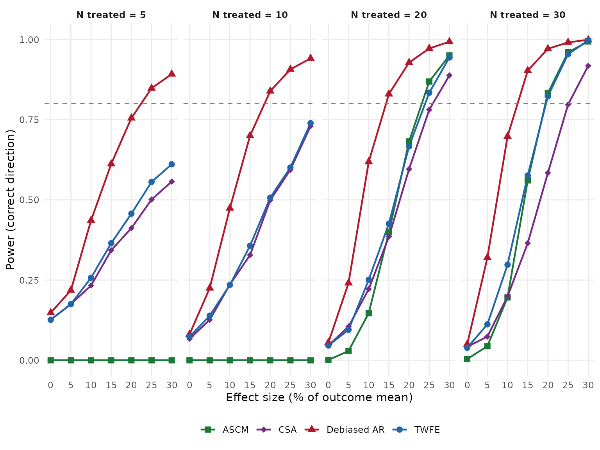
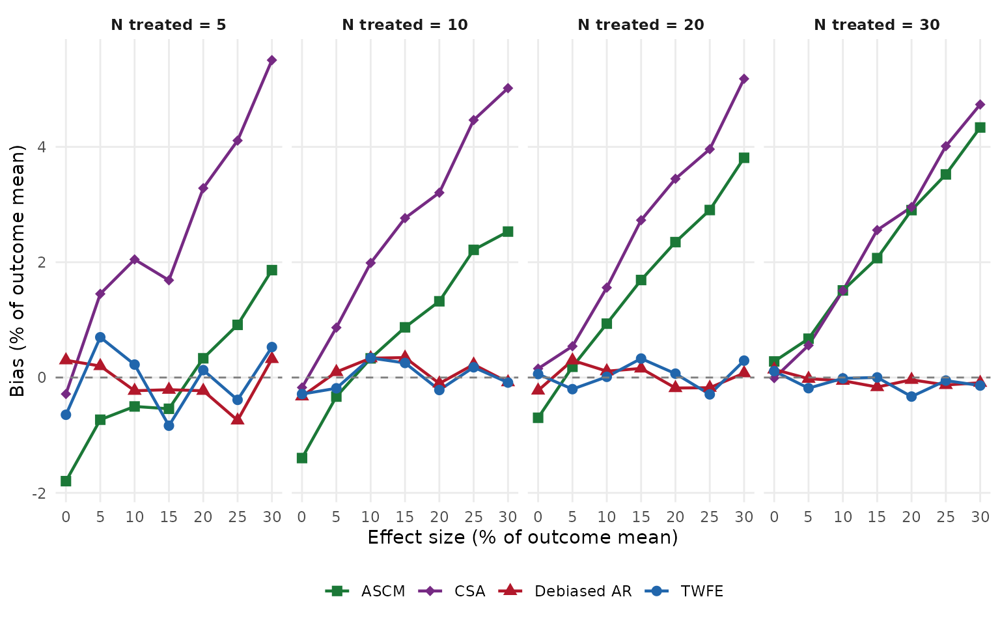
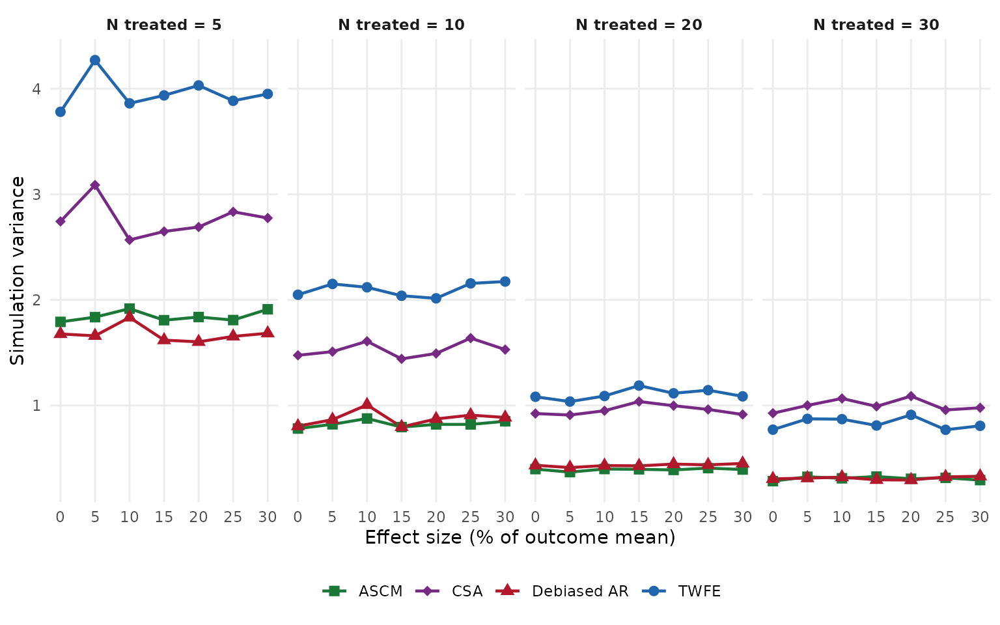
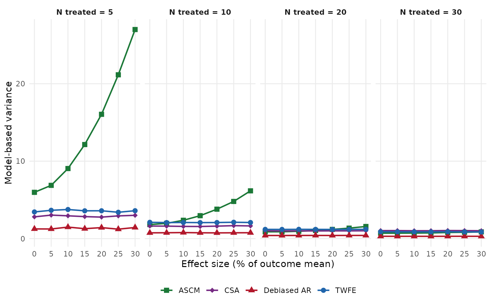

Overview
Policy evaluations increasingly rely on modern causal inference and quasi-experimental methods, including designs such as advanced difference-in-differences approaches, synthetic control, and autoregressive models. Although these methods are widely used, power analysis for them can be less straightforward than for standard randomized experiments or simple regression models.
Before estimating and interpreting results from their models,
researchers using those methods should consider whether policy effects
can in practice be recovered given the structure of their data.
optic helps users do exactly that. The optic
package helps researchers compute statistical power for a range of
policy evaluation designs under realistic assumptions about study
design, the magnitude of policy effect sizes, the lag or buildup in
policy effects over time, and outcome variability. In many settings,
simulation-based power analysis is especially valuable because analytic
formulas may be unavailable, difficult to derive, or poorly aligned with
the design ultimately used in practice.
This vignette introduces the general workflow for using optic to estimate power across a range of modern policy evaluation methods. We begin introducing the power analysis workflow, then show how to specify designs, define target estimands, and compute power under alternative assumptions. The goal is to help users move from abstract study plans to transparent, reproducible power calculations.
Power analysis workflow
Although the exact syntax varies by model, power analysis in
optic follows the same steps:
Specify the study design. Define the number of treated units, time periods, treatment timing, and clustering structure.
opticassigns treatment at random from observed panel units, so the user’s data defines the pool of available units and the time span.Specify the data-generating process. State how outcomes behave under the null and alternative hypotheses. This includes the size of the policy effect (as a fraction of the outcome mean), the direction of the effect, and whether the policy takes effect instantly or ramps up over several periods.
opticsimulates treatment effects directly onto the user’s empirical panel data, preserving the outcome’s natural variability, serial correlation, and cross-sectional heterogeneity.-
Choose a set of estimators. Select estimators that match the planned analysis.
opticsupports:- Two-way fixed effects (TWFE) regression via
lmorfeols - Augmented synthetic control (ASCM) via the
augsynthpackage - Callaway and Sant’Anna (CSA) group-time ATT via the
didpackage - Debiased autoregressive models via the
autoeffectpackage
- Two-way fixed effects (TWFE) regression via
Simulate repeated datasets. For each combination of design parameters (number of treated units, effect size, model), optic generates many synthetic datasets by randomly assigning treatment and adding the policy effect specified by the user.
opticthen uses each user-specified model to estimate policy effects, and returns simulation results including point estimates, standard errors, and p-values.Estimate power. Power is the proportion of simulated datasets in which the null hypothesis is rejected correctly. For non-null effects, power is the fraction of iterations where the model both rejects at the chosen significance level and recovers the correct sign of the effect. This guards against scenarios where a method rejects frequently but with the wrong sign (Type S error).
This workflow lets users align power calculations with the substantive features of their policy setting, including how quickly a policy is expected to affect outcomes.
Worked Example: comparing power for ASCM, CSA, TWFE, and Debiased AR
We illustrate the workflow above using the overdoses
dataset shipped with optic, which contains state-year panel data on drug
overdose crude death rates, unemployment, and population for 51 U.S.
states from 1999 to 2017.
Data
A key requirement of the package is that it receives balanced, repeated-measures panel data on the outcome with no missing values. We drop a handful of states that cause numerical issues with augmented synthetic control, consistent with common practice when balancing the donor pool.
sim_data <- overdoses %>%
filter(!(state %in% c("Nebraska", "Nevada", "Arkansas",
"Mississippi", "Oregon", "South Dakota",
"North Dakota")))
outcome_mean <- mean(sim_data$crude.rate, na.rm = TRUE)
cat("Outcome mean (crude death rate per 100k):", round(outcome_mean, 2), "\n")
#> Outcome mean (crude death rate per 100k): 13.1
cat("States:", length(unique(sim_data$state)), "\n")
#> States: 44
cat("Years:", paste(range(sim_data$year), collapse = "-"), "\n")
#> Years: 1999-2017Define models
We specify four models that represent distinct analytic traditions in
policy evaluation using the optic_model function. Here we
study four models:
- TWFE: Two-way fixed effects regression with unit and time fixed effects, cluster-robust standard errors at the state level.
-
Debiased AR: Debiased autoregressive model via the
autoeffectpackage, which removes the bias inherent in standard autoregressive panel models by using Nickell-bias-corrected estimates. We include an unemployment rate covariate and use 2 lags for cumulative effect estimation, with cluster-robust standard errors. - ASCM: Augmented synthetic control, which reweights untreated units to match pre-treatment trends.
- CSA: Callaway and Sant’Anna’s group-time ATT estimator, designed for staggered adoption settings.
library(augsynth)
library(did)
library(autoeffect)
twfe <- optic_model(
name = "TWFE",
type = "reg",
call = "lm",
formula = crude.rate ~ as.factor(year) + as.factor(state) +
treatment_level + unemploymentrate,
se_adjust = "cluster-unit"
)
csa <- optic_model(
name = "CSA",
type = "did",
call = "att_gt",
formula = crude.rate ~ treatment_level,
se_adjust = "none",
yname = "crude.rate",
tname = "year",
idname = "state",
gname = "treatment_date"
)
ascm <- optic_model(
name = "ASCM",
type = "multisynth",
call = "multisynth",
formula = crude.rate ~ treatment_level,
se_adjust = "none",
unit = as.name("state"),
time = as.name("year"),
lambda = 1e-6
)
debar <- optic_model(
name = "Debiased AR",
type = "autoeffect",
call = "autoeffect",
formula = crude.rate ~ treatment_level + unemploymentrate,
se_adjust = "cluster-unit",
lags = 2
)Configure and run simulations
We vary two design parameters:
- Number of treated units (): 5, 10, 20, 30. This reflects settings ranging from a handful of early-adopter states to a majority of the panel.
- Effect size: 5%, 10%, 15%, 20%, 25%, 30% reductions in the outcome mean. A null effect (0%) is included for Type I error calibration.
All effects are instantaneous and negative (consistent with a policy intended to reduce overdose deaths). For real applications, 500–1000 iterations are recommended.
library(future)
effect_pcts <- c(0, 0.05, 0.10, 0.15, 0.20, 0.25, 0.30)
effect_magnitudes <- as.list(effect_pcts * outcome_mean)
n_treated <- c(5, 10, 20, 30)
sim <- optic_simulation(
x = sim_data,
models = list(twfe, debar, ascm, csa),
iters = 100,
method = "no_confounding",
unit_var = "state",
treat_var = "state",
time_var = "year",
effect_magnitude = effect_magnitudes,
n_units = n_treated,
effect_direction = "neg",
policy_speed = "instant",
n_implementation_periods = 0,
verbose = FALSE
)
plan(multisession, workers = 6)
results <- dispatch_simulations(
sim, use_future = TRUE, seed = 47201, verbose = 0,
future.packages = c("optic", "autoeffect", "augsynth", "did", "dplyr")
)
plan(sequential)Summarize results
For each combination of model, effect size, and number of treated
units, we compute a full set of performance metrics in a single call to
summarize_simulation(). This exported helper returns one
row per scenario with columns including mean_bias,
mean_variance (the average of the model-reported
variances), simulated_variance (the empirical variance of
estimates across iterations), rmse, coverage,
rejection_rate, and type_s_error. We use these
downstream both for power and for the additional metrics shown in the
final section.
For TWFE and Debiased AR, which produce both unadjusted and cluster-robust results, we keep only the cluster-robust rows. ASCM and CSA report a single SE adjustment (“none”), which is their default inference.
available_models <- unique(results$model_name)
results_filtered <- results %>%
filter(
(model_name %in% c("TWFE", "Debiased AR") &
se_adjustment == "cluster-unit") |
# Here "none" means the default standard error provided by each method.
(model_name %in% c("ASCM", "CSA") & se_adjustment == "none")
)
summary_df <- results_filtered %>%
group_by(model_name, n_units, effect_magnitude, effect_direction) %>%
group_modify(~ summarize_simulation(
.x,
true_effect = if (.y$effect_direction == "neg") -.y$effect_magnitude
else .y$effect_magnitude
)) %>%
ungroup() %>%
mutate(
effect_pct = round(effect_magnitude / outcome_mean * 100),
n_units_label = factor(
paste0("N treated = ", n_units),
levels = paste0("N treated = ", sort(unique(n_units)))
),
power = ifelse(
effect_magnitude == 0,
rejection_rate,
rejection_rate * (1 - type_s_error)
),
bias_pct = mean_bias / outcome_mean * 100,
rmse_pct = rmse / outcome_mean * 100
)Power curves
The figure below shows correct-direction power as a function of effect size, faceted by the number of treated units. The horizontal dashed line marks the conventional 80% power threshold.
all_colors <- c(
"TWFE" = "#2166AC", "Debiased AR" = "#B2182B",
"ASCM" = "#1B7837", "CSA" = "#762A83"
)
all_shapes <- c("TWFE" = 16, "Debiased AR" = 17, "ASCM" = 15, "CSA" = 18)
model_colors <- all_colors[names(all_colors) %in% available_models]
model_shapes <- all_shapes[names(all_shapes) %in% available_models]
ggplot(
summary_df,
aes(x = effect_pct, y = power, color = model_name,
shape = model_name, group = model_name)
) +
geom_line(linewidth = 0.8) +
geom_point(size = 2.5) +
geom_hline(yintercept = 0.80, linetype = "dashed", color = "gray50") +
facet_wrap(~n_units_label, nrow = 1) +
scale_color_manual(values = model_colors, name = NULL) +
scale_shape_manual(values = model_shapes, name = NULL) +
scale_x_continuous(breaks = unique(summary_df$effect_pct)) +
scale_y_continuous(limits = c(0, 1)) +
labs(
x = "Effect size (% of outcome mean)",
y = "Power (correct direction)"
) +
theme_minimal() +
theme(
strip.text = element_text(face = "bold"),
legend.position = "bottom",
panel.grid.minor = element_blank()
)
Type I error
Under the null (), the rejection rate estimates the Type I error rate and should be approximately 0.05 for a well-calibrated test.
summary_df %>%
filter(effect_magnitude == 0) %>%
select(model_name, n_units, rejection_rate) %>%
tidyr::pivot_wider(names_from = n_units, values_from = rejection_rate,
names_prefix = "N=") %>%
knitr::kable(digits = 3, caption = "Type I error rate by model and N treated")| model_name | N=5 | N=10 | N=20 | N=30 |
|---|---|---|---|---|
| ASCM | 0.000 | 0.000 | 0.001 | 0.004 |
| CSA | 0.127 | 0.067 | 0.046 | 0.042 |
| Debiased AR | 0.148 | 0.081 | 0.055 | 0.050 |
| TWFE | 0.126 | 0.073 | 0.046 | 0.039 |
Examining other metrics of performance
Power tells us how often a method rejects the null in the right direction, but it is not the only thing worth tracking. Bias measures whether the point estimate is systematically off from the true effect. Simulation variance is the empirical spread of estimates across Monte Carlo iterations. Model-based variance is the average of the variances each fit reports for itself; comparing the two reveals whether reported standard errors match the actual sampling distribution. Relative RMSE combines bias and variance into a single accuracy summary, expressed as a percentage of the outcome mean, and coverage measures how often the 95% confidence interval contains the truth.
All of these are returned by the same
summarize_simulation() call used above. The plots below
replace the y-axis of the power curves with each metric in turn, so
panels are directly comparable across number of treated units and effect
size.
Bias
Bias is the average difference between the point estimate and the true effect. A well-calibrated estimator should have bias near zero across all scenarios. We express it in percentage points relative to the outcome mean so it is comparable to the effect-size axis.
metric_plot(summary_df, "bias_pct", "Bias (% of outcome mean)", hline = 0)
Simulation variance
Simulation variance is the empirical variance of the point estimates across iterations – a Monte Carlo estimate of the true sampling variance of each method.
metric_plot(summary_df, "simulated_variance", "Simulation variance")
Model-based variance
Model-based variance is the average of the variances reported by each fit. Where this differs from the simulation variance above, the model’s standard errors are mis-calibrated relative to the true sampling distribution.
metric_plot(summary_df, "mean_variance", "Model-based variance")
Conclusion
optic makes it possible to compute power for a range of
modern policy evaluation methods using a common simulation-based
workflow. This can help researchers compare analytic approaches, assess
tradeoffs between different approaches, and plan studies that are better
matched to their substantive and methodological goals. Please send
comments or questions to: optic@rand.org.